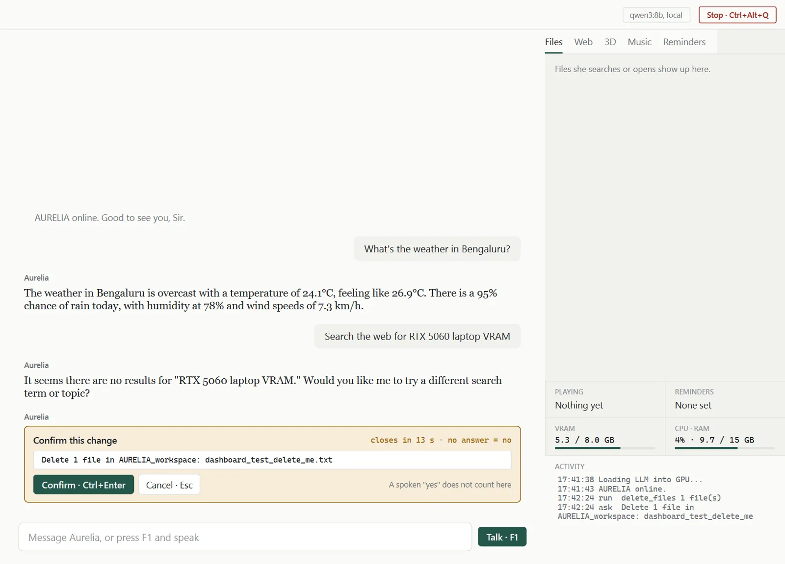
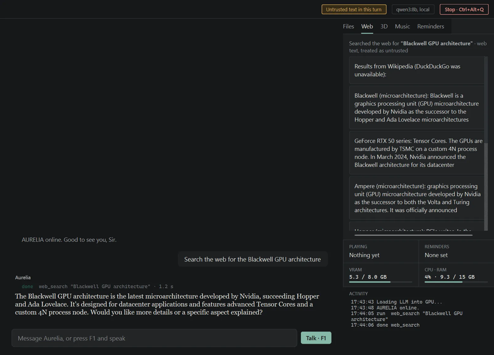
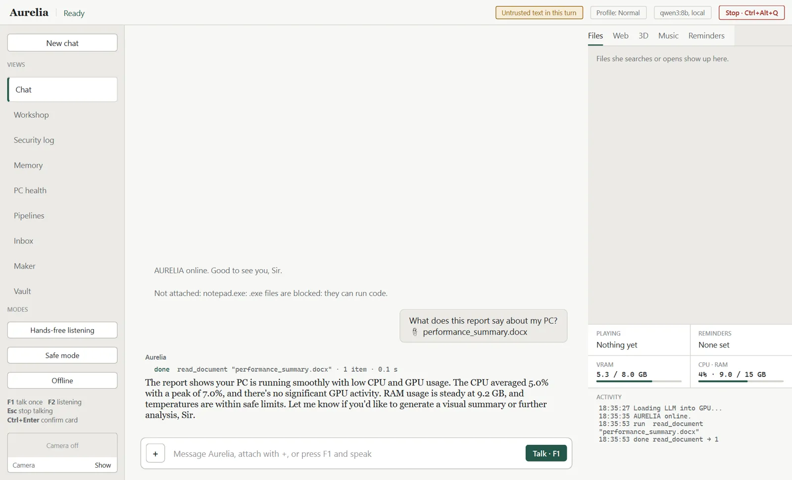

Files
Search, list and open documents, images, music and 3D files by plain name. If several match, she reads the list and asks which one.
Open the Pravah report
Offline AI assistant · English & తెలుగు
AURELIA is a voice-first AI that runs entirely on your own RTX graphics card. Talk to her in English or Telugu. She finds your files, reviews your 3D prints and builds your reports, works with the Wi-Fi switched off, and checks every action against a rulebook the AI itself can't rewrite.
AURELIA AURELIA online. Good to see you, Sir.
Why AURELIA exists
Cloud assistants send every word you say to someone else's server. AURELIA keeps it all at home. The brain, the ears and the voice run on the graphics card in your laptop, so your files, your camera and your money records never have to leave it. She speaks your language, she has a dry British sense of humour, and she cannot act without passing a rulebook she is not allowed to read.
How one request flows
The mic records until you pause. Whisper large-v3-turbo turns speech into text on the GPU in about 0.7 seconds, listening only for English and Telugu.
qwen3:8b, an open 8-billion-parameter model running locally through Ollama, decides whether to answer or to call one of her tools.
Every tool call goes to the Policy Engine. The model can only propose. Ordinary code decides.
The approved tool runs: open a file, read the inbox, build a slide deck. Its output comes back wrapped and marked as untrusted.
She speaks sentence by sentence while the model is still writing. Kokoro speaks English in a British voice. Meta MMS speaks Telugu.
Fifteen working feature areas in v1
Every feature below works today on the founder's laptop. Each one has a safety rule, and every tool she uses appears on screen as a one-line card so you can see what she is doing.
Search, list and open documents, images, music and 3D files by plain name. If several match, she reads the list and asks which one.
Open the Pravah report
Create, move, rename and delete inside her workspace. Deletes go to a recycle folder for seven days.
Restore what you deleted
Lists your STL, OBJ, STEP, GLB and 3MF files, newest first, and opens them.
Show my latest 3D models
Checks a model for holes, fit on the printer bed, overhangs and the weight of plastic it will use.
Is the chassis tray printable?
212 × 130 × 46 mm · ≈221 g PLA
A hands-free bench helper: timers, unit conversions, resistor colour codes, drill and torque tables, big text.
What's brown black orange?
10 kΩ
One sentence records CPU, GPU, RAM and temperature, then builds an Excel chart, a 4-slide PowerPoint and a Word summary. No Office window opens.
Make a performance report of my PC for 60 seconds
When a game starts she switches the power plan and steps off the GPU, freeing about 5 GB of VRAM. Both come back when it closes.
Gaming profile
Takes one webcam picture when asked, or reads an image you attach, with a second local model. Only while you have switched the camera on.
What am I holding?
Reads Word, PowerPoint, Excel, text and CSV. Images go to vision, 3D files to print review. Programs are refused.
Summarise this
Searches past chats and documents, plus a per-day timeline of the apps and files you used. One button forgets a day.
What was I doing yesterday?
Checks disk, memory hogs, startup apps and recent crashes, explains them and opens the right Windows settings page. Never runs admin commands.
Give my PC a checkup
Off by default. Flags low-contrast slides and new errors in your logs. Three tips an hour at most, with Fix it, Not now and Mute today.
Turn on under Modes
Imports bank statement CSVs and shows spending by category. Encrypted with your Windows login. She goes fully offline while it's open.
Open my vault
Reads and summarises your inbox, drafts replies. Sending needs your click on a confirm card, every single time.
Any new emails?
An evening summary of what you did and what she did, then a question about tomorrow.
Give me my debrief
Time, weather, news, web search, local music and YouTube audio, spoken reminders, system status, "remember that…" facts, and a clipboard scam check for fake "paste this into Run" commands.
The real dashboard, not a mock-up
Chat in the middle, a live workspace on the right, VRAM and an activity log always visible, and a red Stop button that is never more than one key away. These are unedited screenshots of v1.



Security model
The language model can only suggest an action. A separate piece of ordinary code, the Policy Engine, checks every suggestion against a locked rulebook before anything happens. If a poisoned email or web page tricks the model, the rulebook still says no.
TIER 1 · RUNS Opens the report, then tells you what she did.
BLOCKED AT PATHS .ssh is on the denylist. Logged to the hash-chained audit trail.
Try it
Delete 1 file in AURELIA_workspace: old_draft_v2.txt
Only a mouse click or Ctrl+Enter can approve. A spoken "yes" does not count.
Tool output is stripped of hidden HTML, zero-width and Unicode tag characters, wrapped in <untrusted_data> and taints the next three turns.
.ssh, .aws, browser cookies, password managers, wallets, .env and key files are denied. API keys live in Windows Credential Manager.
50+ executable and macro types can never be opened or written. PowerShell, cmd, mshta and rundll32 are never used.
Extension, magic-byte and size checks, then loading in a separate process.
A clipboard guard warns when copied text looks like a "paste this into Run" attack.
Startup check confirms Ollama listens only on 127.0.0.1 and that she isn't running as admin.
Model file digests are pinned. A changed model is flagged at startup.
OneDrive, Google Drive and Dropbox folders are denied, since anything written there leaves the laptop.
Audit entries are hash-chained, so an edited line breaks the chain.
97 automated attack tests pass after every change: injection, path tricks, blocked file types, domain escapes and rate abuse.
On-device engineering
Speech recognition, an 8B tool-calling model and two offline voices share one laptop GPU, with room to spare. When you ask her to look at something, the main model steps aside, the vision model loads, looks, and hands back.
99ms → 22ms
Sphere UI frame time, after moving 12,500 Python draw calls into 6 batched numpy calls. About 10 fps to 45 fps.
≈0.7s
Speech to text on the GPU. She starts talking while the model is still writing her second sentence.
5GB
VRAM she gives back when a game or video editor starts, restored when it closes.
₹0
Server cost per user. Every token is generated on the customer's own GPU, so there are no inference bills to pass on.
Indian languages, offline, by voice
Speak English or Telugu and she answers in the same language, in Telugu script. Mixed Tenglish is understood. She listens only for the languages you set, so Telugu is never misheard as Hindi. No data plan required.
నమస్కారం, ఈ రోజు వార్తలు ఏంటి?
నమస్కారం Sir, all systems nominal.
How AURELIA is different
| ChatGPT / Gemini apps | Microsoft Copilot | Alexa / Google Assistant | AURELIA | |
|---|---|---|---|---|
| Runs offline on your PC | No | Partly, Copilot+ PCs | No | Yes, fully |
| Your files leave the device | Yes, when shared | Often | Yes | Never |
| Telugu voice, offline | No | No | Cloud only | Yes |
| Controls local files and apps | Limited | Inside Office | No | Yes, policy-checked |
| 3D models, print review, workshop | No | No | No | Yes |
| AI treated as untrusted by design | No | No | No | Yes, 97 tests |
| Cost to run | Subscription | Subscription | Free, ads and data | Your own GPU |
Who she's for
One voice for 3D model review, print checks, workshop timers and auto-built lab reports.
Already own an RTX laptop. She steps off the GPU the moment a game or editor starts.
Client data never leaves the PC. An encrypted vault, an offline lock and an audit log that fits India's DPDP Act.
Help by voice in their own language, with no cloud account to create.
Planned editions
These are starting points. The closed beta will test what people actually pay before anything goes on sale.
₹0
Anyone with an RTX laptop
≈₹299/month
or ≈₹2,499 one-time · students, makers, gamers
≈₹999/seat/month
CAs, lawyers, clinics, small firms
Per lab/year
College maker labs, robotics clubs
Roadmap
The next build adds the moment people remember: pinch a 3D model in mid-air and turn it with your hand.
All 15 feature areas, two languages, the dashboard and the security layer with 97 passing tests.
Gesture-controlled 3D viewer, "Hey Aurelia" wake word, demo video.
Commercially licensed Telugu voice, one signed installer, closed beta with 5 to 10 testers, privacy policy and terms.
Download from this site and the Microsoft Store. Free and Pro editions.
Voice ID, privacy receipts, Hindi, room scenes, robot missions, the Privacy edition.
Founder
Robotics & AI engineer · Bengaluru, India
I build robots, and I wanted one of them to have a voice and a personality, like JARVIS. Cloud assistants needed the internet, sent everything to a server and barely spoke Telugu, my first language. So I built one that lives on the laptop.
Where AURELIA is today
The closed beta is for 5 to 10 people on different RTX laptops. If you have one and want a private JARVIS, write in.